Makeup Gallery Korean Look
|
|
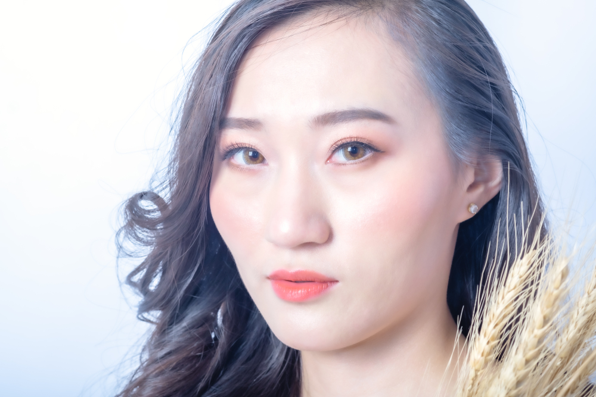
|
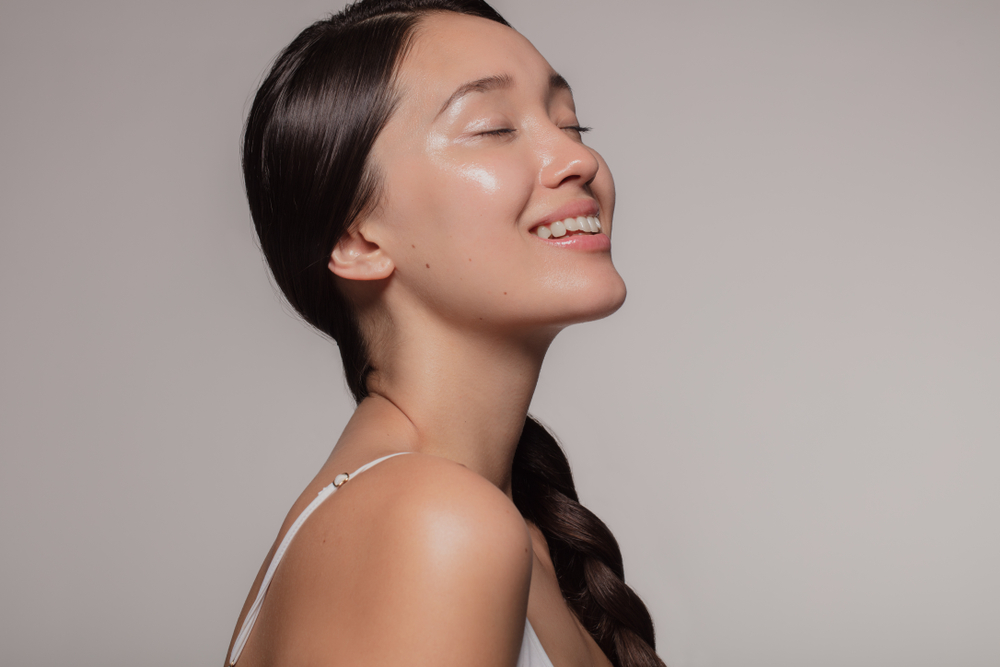
|
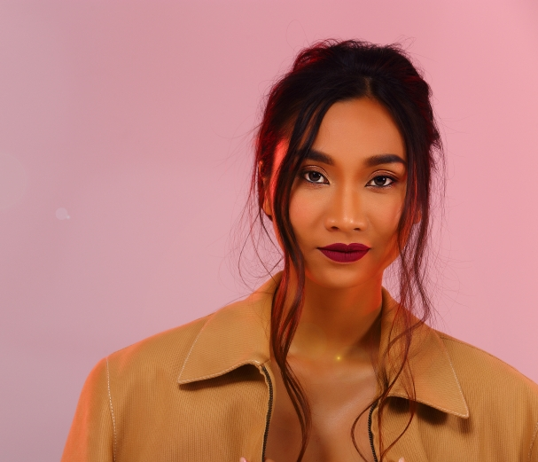
|
1. Peach Makeup
Kecintaan cewek Korea terhadap warna pastel juga diaplikasikan pada gaya makeup mereka. Warna peach biasanya dijadikan sebagai makeup andalan cewek Korea saat musim semi dan panas. Pasalnya, warna ini akan semakin menyempurnakan kulit cantik mereka. Selain itu, warna peach yang terang namun soft ini juga bisa membuat wajah terlihat segar sekaligus manis secara bersamaan.
| 2. Glass Skin Makeup
Tren makeup yang sempat menghebohkan dunia kecantikan ini menonjolkan riasan natural namun dengan sentuhan akhir yang glowing. Di Korea, istilah glass skin digunakan untuk menyebut kondisi kulit yang sangat halus, tanpa noda, dan sehat berkilau sebening kaca.
Selain rajin menggunakan produk skin care yang tepat, glass skin juga bisa didapat dengan riasan wajah. Kunci terpenting adalah menggunakan pelembap wajah sebelum melanjutkan ke base makeup. Pelembap wajah akan memberikan efek wajah glowy. Selain itu, pastikan kamu memilih jenis BB cushion atau liquid foundation sebagai dasar makeup..
3. Edgy Grunge makeup.S
Nggak cuma tampilan natural dan manis, gaya makeup ala Korea satu ini bisa bikin tampilanmu terlihat lebih berani dan berbeda. Gaya makeup grunge yang sempat ngehits pada 90-an kembali jadi tren yang banyak diikuti cewek Korea.
Ciri khas gaya makeup ini adalah riasan bibir berwarna gelap. Biasanya dipadukan dengan riasan mata yang bold seperti smokey eye. Tapi untuk edgy grunge makeup ala Korea lebih memusatkan pada bagian bibir dengan riasan mata yang natural.
Tampilan makeup satu ini cocok kamu aplikasikan saat pergi ke pesta atau konser musik. Buat kamu yang suka bereksperimen dan ingin tampil beda, riasan wajah ini juga bisa dipakai sehari-hari, lho. |
|
|
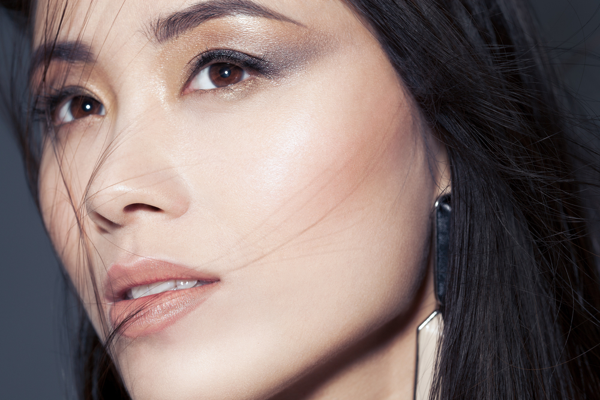
|
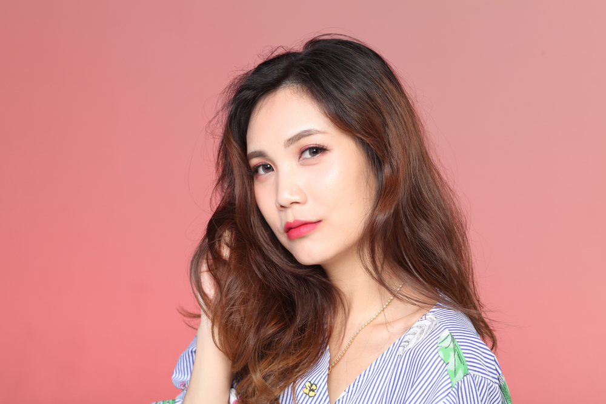
|
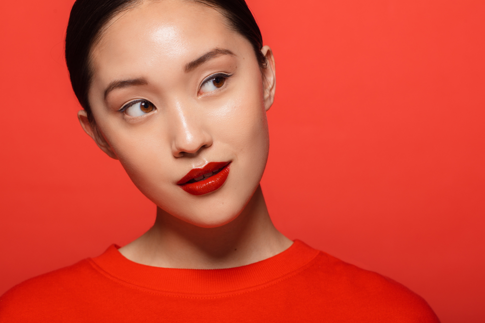
|
4. Glam smokey makeup.
Berbeda dengan edgy grunge makeup, gaya makeup satu ini justru memfokuskan pada bagian riasan mata. Sesuai dengan namanya, glam smokey makeup akan membuat tampilanmu bold tanpa berlebihan.
Aplikasikan soft smokey eye pada bagian mata yang dipadukan dengan lipstik warna nude untuk mendapatkan tampilan elegan ini. Kamu bisa menambahkan lensa kontak untuk menyempurnakan riasan matamu.
| 5. Monotone makeup.
Salah satu tren makeup Korea yang wajib kamu coba adalah gaya makeup monotone. Riasan wajah satu ini memiliki ciri khas berupa penggunaan satu warna untuk eyeshadow, perona pipi, dan lipstik.
Monotone makeup tetap mempertahankan gaya makeup natural dan minimalis namun dengan sedikit sentuhan warna terang. Tampilan ini cocok banget buat kamu yang suka bergaya feminin.
| 6. Bright lip makeup.
Gaya makeup Korea sering kali menggunakan warna lipstik natural seperti soft pink, nude, dan pastel. Meski begitu, gaya makeup memakai warna lipstik terang ternyata juga tidak kalah digandrungi para cewek Korea.
Penggunaan warna lipstik terang ini cocok untuk riasan wajah siang dan malam hari. Agar lebih menarik, coba gunakan lipstik warna merah terang saat menghadiri acara pada malam hari.
|
Style Trendie Korean Look
|
|
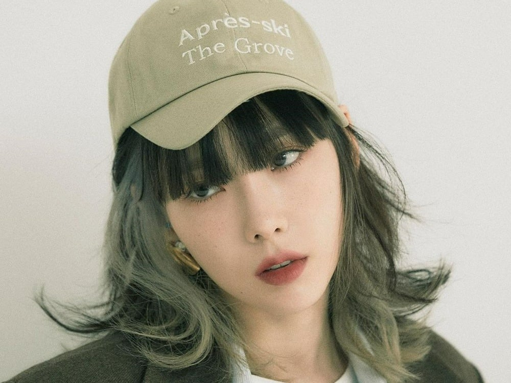
|
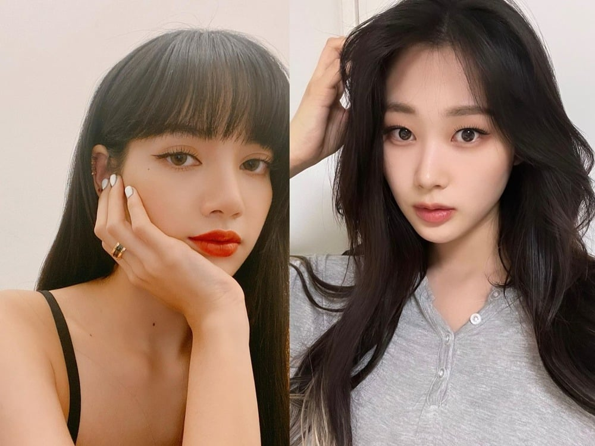
|
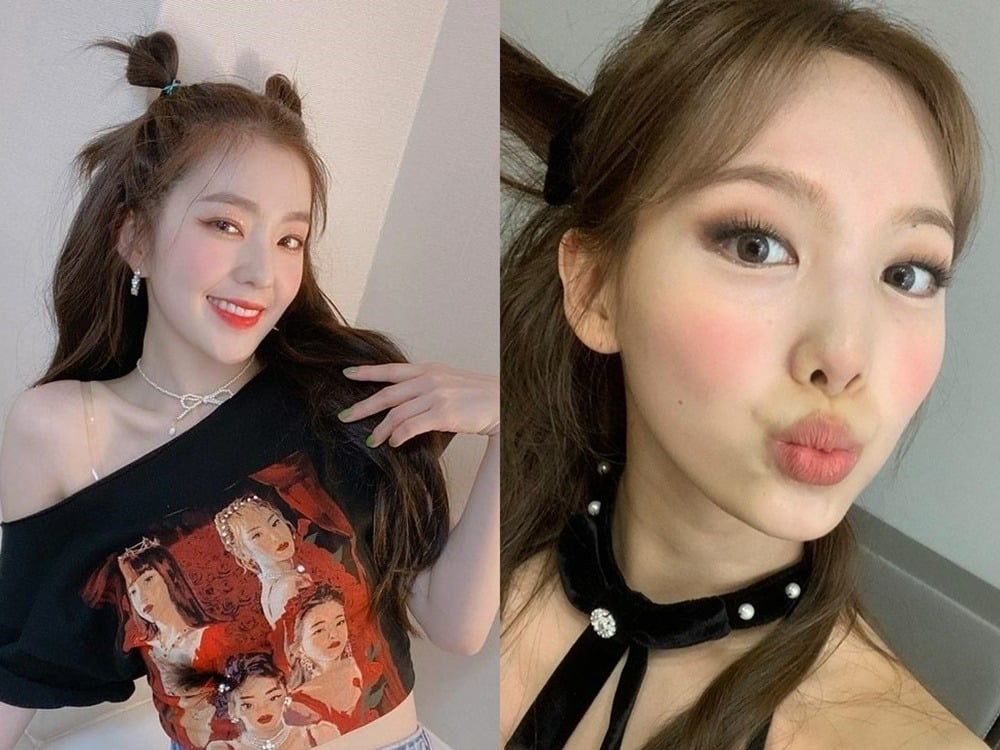
|
1. Mauve LIPS
Menuju musim semi, perpaduan warna lipstik merah ceri dan mauve bisa memberi kesan hangat pada penampilan. Warna lipstik ini cocok untuk semua warna kulit. Bagi pemilik cool skin tone lipstik warna mauve dapat membuat kulit wajah tidak terlihat pucat.
Sedangkan, untuk kulit sawo matang, warna deep mauve merupakan pilihan yang tepat untuk menciptakan penampilan yang lebih stunning. Kelebihan lipstik warna mauve yang lain adalah bisa dipadukan dengan berbagai gaya makeup, mulai dari natural hingga bold..
| 2. Idol-style eyelashes
Tren makeup Korea yang paling populer di kalangan para wanita adalah tampilan bulu mata ala idol yang tampak panjang dan lentik natural. Tampilan bulu mata ini bisa menciptakan efek mata yang lebih lebar.
Kunci untuk mendapatkan idol style eyelashes look ini adalah dalam penggunaan maskara dan bulu mata palsu. Pertama, kamu perlu mengaplikasikan maskara waterproof pada bulu mata bagian atas dan bawah. Lalu, jepit dengan eyelash curler. Kemudian untuk pemakaian false eyelashes, pilih jenisindivid.
| 3. Hangover blush
Beberapa tahun lalu, pemakaian blush on dengan tampilan hangover blush sempat menjadi tren. Dan ternyata, pada kuartal pertama tahun 2022 ini gaya makeup ini kembali populer.
Untuk menciptakan look ini, kamu cukup memberikan perona pipi berwarna peach, atau coral pink di bagian cheek bone. Sebagai tips, pilih blush dengan pigmentasi warna sedang, sehingga kamu bisa lebih mudah mengatur tingkat warna yang diinginkan..
|
|
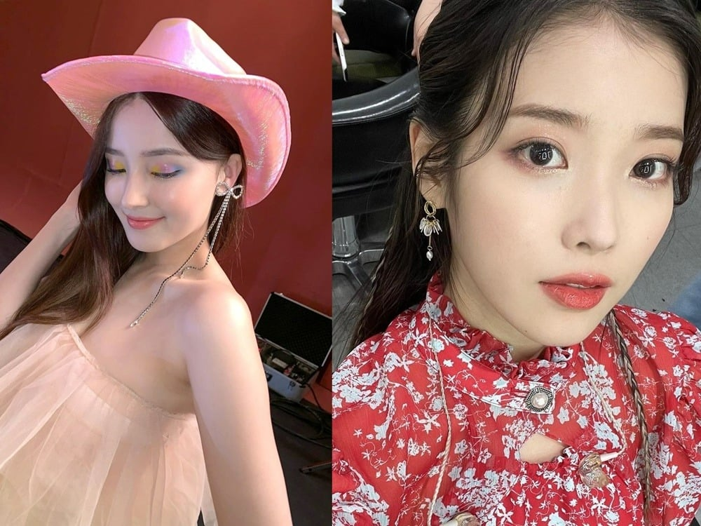
|
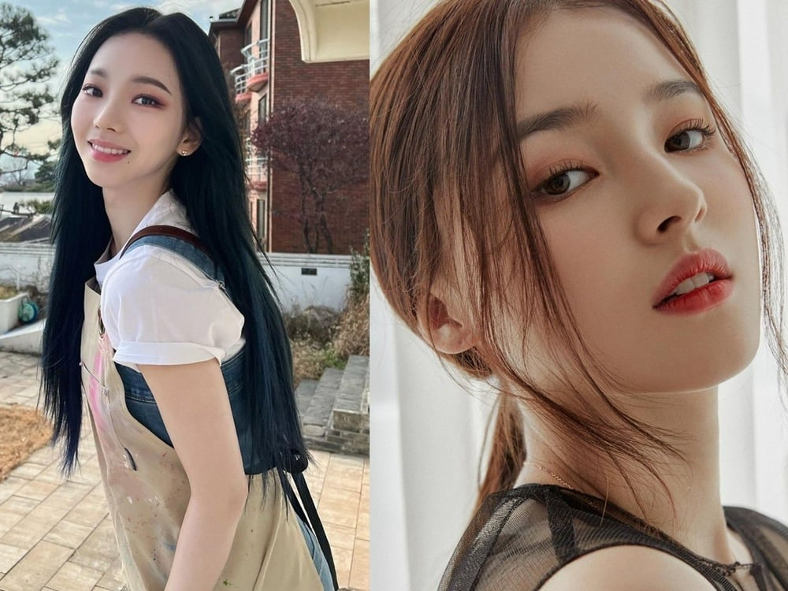
|
4. Y2K Makeup
Selama ini tren makeup mata Korea populer menggunakan warna eyeshadow yang soft. Namun, tahun ini nampaknya riasan mata di Korea terlihat lebih berwarna. Ciri khas Y2K makeup adalah permainan eyeshadow warna pop serta riasan blink-blink yang membuat maka lebih pop up.
Untuk mengkreasikan tren makeup Korea satu ini, kamu bisa memilih eyeshadow shimmer warna hangat seperti campuran warna coklat muda dan terakota. Kemudian kamu bisa aplikasikan liquid eyeshadow warna emas di area lower lash line dan tear duct. Selain itu, jika ingin riasan mata yang pop kamu bisa mencoba eyeshadow neon dan menambahkan liquid eyeshadow transparant di atasnya
| 5. Cloudy eyes
Tren makeup mata Korea satu ini merupakan versi smokey eyes yang lebih soft. Di mana untuk menciptakan cloudy eyes makeup kamu bisa menggunakan eyeshadow dengan warna light, seperti nude atau soft pink.
Aplikasikan eyeshadow di seluruh area kelopak mata, kemudian sapukan eyeshadow warna hitam atau coklat tua secara tipis di sudut mata bagian luar. Terakhir beri sentuhan eyeshadow shimmer pada bagian tengah kelopak mata untuk menyempurnakan tampilan cloudy eyes..
|